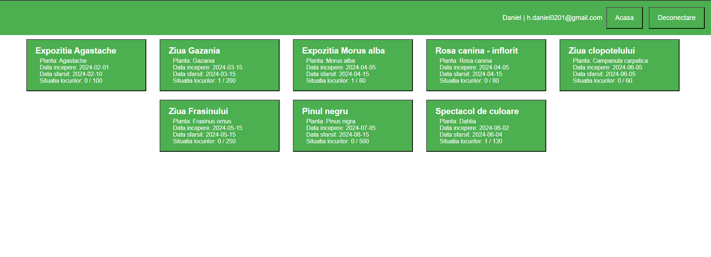
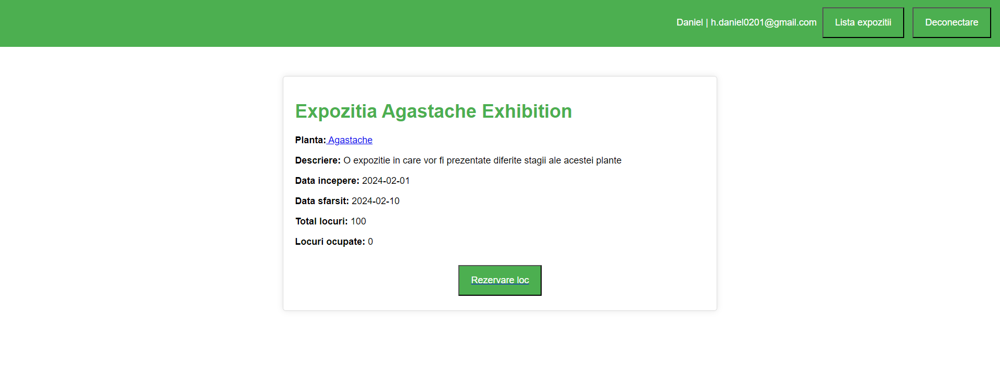
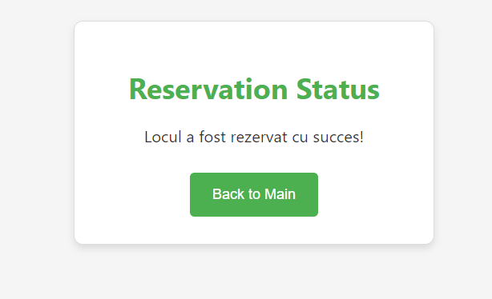
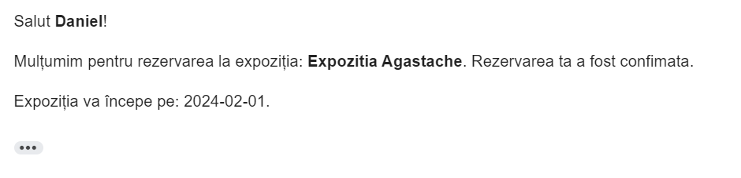

Consider a scenario in which a user has created an account in the application and wants to make a reservation for an exhibition he likes.
Here's how it works:
-
See all exhibitions: The user starts by going to the page with all the exhibitions and seeing the summary information about all the exhibitions displayed on one page.

-
See one exhibition details: After deciding that he would like to participate in an exhibition, go to its page and see more details about it

-
Seat reservation: Next is the reservation, by pressing the button dedicated to the reservation we will reserve a place at that exhibition, and we will then receive by email the confirmation as well as the unique ID with which we will go to the exhibition.


We then return to the main page and repeat the process as many times as we want. We can reserve several places at the exhibition from the same account, but they will have different IDs.